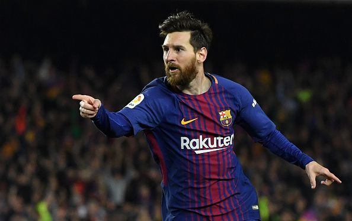
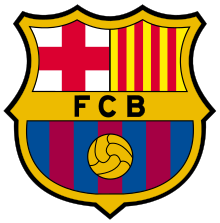

LIONEL MESSI

BARCELONA

PERJALANAN KARIR LIONEL MESSI
- Lionel Messi lahir di Rosaria 24 Juni 1987
- Messi bermain untuk Barcelona dan timnas Argentina bermain sebagai penyerang
- Di usia 21,Messi telah dinobatkan untuk ballon d'or dan pemain terbaik dunia FIFA
KLIK disini untuk lebih lanjut
TES